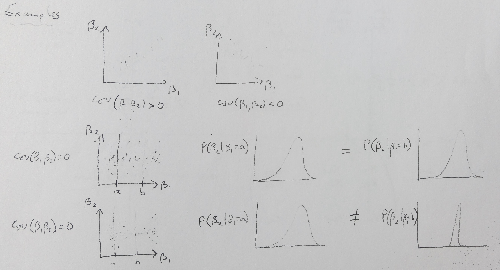
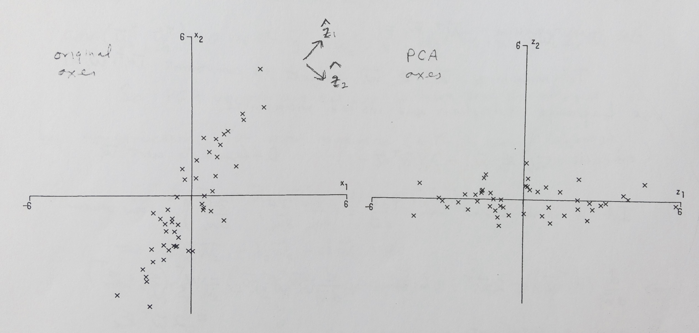

Multivariate Analysis/PCA
Terms:
- ill-conditioned — refers to a system in which multiple variables are colinnear, causing instability in regression
R Functions:
- prcomp(<matrix>)
- JADE{NSS.TD.JD(ts)} (ICA procedure used to separate audio)
The Covariance Matrix
The covariance matrix \(S_{jk}=\frac{1}{n}\sum\limits_i^n(X_{ij}-\bar{X}_j)(X_{ik}-\bar{X}_k)\) measures the correlation (non-technical term—correlation is covariance normalized by the two variances) between variables k and j, and the diagonal elements are simply the variances of each variable.
Multivariate Distances
Spatially we generally use the Euclidean distance, but also available is the Manhattan distance or higher-order distances. The choice of units between dissimilar variables can highly affect the distances between observations, so a common solution is to set each variable to have zero mean and scale by the standard deviation: \(Z_{ij}=\frac{X_{ij}-\bar{X}_j}{\sqrt{S_{jj}}}\), then proceed as normal.
Multivariate Distributions
Many 1-dimensional distributions can readily be generalized to higher dimensions. Particularly important is the multivariate normal (MVN) distribution, which is a natural multivariate generalization of the 1D normal distribution. The shape of the distribution is determined byt the covariance matrix.
Hypothesis Testing
The multivariate analog of the t-test is the Hotelling \(T^2\), \(T^2=n(\mathbf{\bar{X}}-\mu_0)'\mathbf{S}^{-1}(\mathbf{\bar{X}}-\mu_0)\), and probabilities for the null hypothesis \(\mu=\mu_0\) can be found from tables.
Multivariate Regression
Regression can also be extended fairly simply into higher dimensions, although some problems can occur. A major example is ill-conditioning, in which the existence of collinear variables causes the matrix \((\mathbf{X}^T\mathbf{X})\) to approach singularity (i.e. not invertible). One way to resolve this issue is through ridge regression, in which some scalar is added to the diagonal of the matrix mentioned. The optimal value added can be determined experimentally, and results in a much more stable regression.
Principal Component Analysis (PCA)
PCA seeks to find the variables which cause the greatest variation in the data and creates a model based on the axes found.
It is not necessarily simple to interpret the meaning of the principal components; they will generally be some combination of variables which does not need to have a physical meaning at all. It is therefore important to not blindly base results on a PCA analysis without first thinking about what the PCs might refer to. When looking at the effect of the PCs on the response variables, it is most common to use scree plots an biplots:
Scree plots show how much each PC contributes to the variance of the data. Biplots demonstrate the composition of PCs by showing how much a variable is changed by a unit change in the PCs shown. Vectors which are very similar are often interpreted to be correlated in some way.
Finding the PCs of a set of data is often used to reduce the dimensionality of the data by grouping the variables which compose the first several PCs into single variables. This can make it easier to analyse relationships between the data.
Independent Component Analysis (ICA)
If we want to go deeper into separating out the different components of our data, we can use ICA. While the PCs in PCA are necessarily orthogonal to each other and not independent, the components found from ICA are not orthogonal, and are indeed independent (or as close to independent as possible). This process can be used to great effect in separating out the sources in mixture models, such as placing microphones in a noisy room. Examples of results using R are demonstrated below.